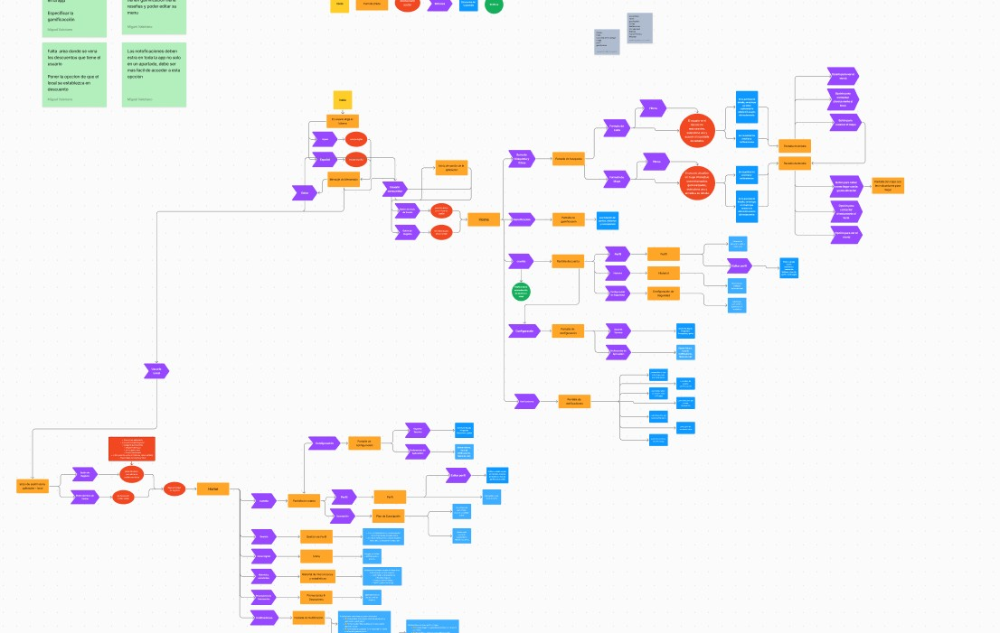
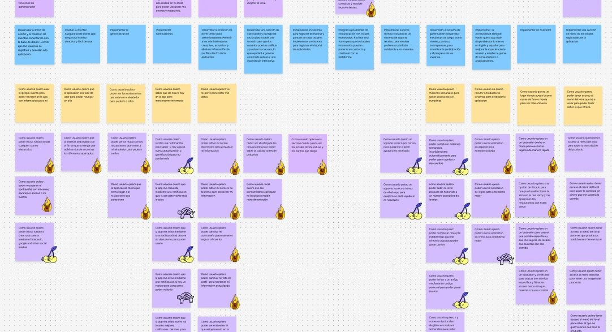

Comercios locales
Prueba gratuita de 3 meses. Permite a los pequeños emprendedores comprobar el retorno de inversión y la atracción de clientes a su local antes de realizar cualquier pago de suscripción.

Aplicación móvil de turismo gastronómico gamificado que reconecta a los ciudadanos paceños con las calles y sus huariques tradicionales.
Angular, Ionic Framework, TypeScript, HTML5, CSS3 / Bootstrap, Firebase (Realtime Database & Auth). Landing web promocional construida en Framer. Prototipado en Figma.
El concepto visual de la marca nace del concepto ancestral del Ukhu Pacha (el mundo interior o profundo). El isotipo abstrae la figura de la serpiente Amaru como un conector entre los espacios urbanos y las personas. La paleta cromática y los patrones de interfaz toman como referencia los tejidos tradicionales Jalq'a, fusionando la cosmovisión local con el lenguaje del diseño digital contemporáneo.


Ukhu surge en el Taller de Diseño Digital 2 con el objetivo central de fomentar el turismo gastronómico urbano en la ciudad de La Paz, motivando a los paceños a salir de sus casas y explorar su propio entorno. La propuesta visibiliza los huariques (pequeños locales de comida tradicional fuera de los circuitos masivos).
Frente al sedentarismo que fomentan las plataformas de envío masivo, Ukhu adopta una restricción voluntaria: cero delivery. La aplicación requiere la presencia física en el establecimiento, recompensando el desplazamiento urbano con dinámicas de gamificación y check-ins por puntos.
Se definieron las taxonomías de contenido, historias de usuario (user stories) y flujos principales de la aplicación para asegurar una navegación limpia y sin fricciones.
La maquetación frontend de la app móvil se desarrolló en Angular e Ionic utilizando HTML5, CSS3 y Bootstrap. El backend se apoyó en Firebase Realtime Database y Auth. En paralelo, la landing page web promocional se diseñó e implementó en Framer.
Integrar una app en un puesto o huarique pequeño en La Paz representa una oportunidad de modernización. Sin embargo, debido a los antecedentes de comisiones excesivas impuestas por las apps de delivery tradicionales, se diseñó un modelo transparente y sin riesgo inicial.
Prueba gratuita de 3 meses. Permite a los pequeños emprendedores comprobar el retorno de inversión y la atracción de clientes a su local antes de realizar cualquier pago de suscripción.
Acceso gratuito con anuncios opcionales y una membresía Premium para desbloquear rutas exclusivas y multiplicadores de puntos.
Navega directamente a través del flujo principal de la aplicación móvil. Diseñado con una interfaz intuitiva para incentivar el descubrimiento de los huariques tradicionales mediante dinámicas gamificadas.


Limitar el delivery implicó crear una interfaz persuasiva que ofrece recompensas reales por salir a caminar, promoviendo el turismo presencial y la reconexión con los espacios urbanos paceños.
Ukhu combate la gentrificación y homogeneización gastronómica, otorgando visibilidad y flujo peatonal directo a los pequeños productores y puestos tradicionales de barrio.